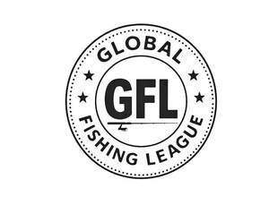

Trade Mark Journal No.2025/034 22 August 2025
UK00004247347 11 August 2025 (9,41,42)

- Class 9
- Downloadable computer application software for mobile phones, namely, software for connecting users interested in fishing; Downloadable computer application software for mobile phones, namely, software for providing information relating to fishing; Downloadable computer application software for mobile phones, namely, software for assisting with recreational fishing activities; Downloadable computer application software for mobile phones, namely, software for sports betting and fantasy leagues relating to fishing.
- Class 41
- Entertainment services, namely, organizing and conducting an array of athletic events rendered live and recorded for the purpose of distribution through broadcast media; Organizing and conducting athletic competitions and games in the field of fishing; Entertainment services in the nature of professional athletes competing in fishing events and competitions; Entertainment services, namely, arranging and conducting of competitions in the field of fishing; Providing information on fishing tournaments; Organizing sporting events, namely, fishing tournaments, exhibitions and competitions; Organizing, conducting and operating fishing tournaments; Sports betting services; Online sports betting services; Entertainment services in the nature of fantasy fishing leagues; Entertainment services in the nature of fantasy fishing contests; Entertainment services, namely, continuing video programs featuring sports and entertainment information relating to fishing accessible via a global computer network or by cable, satellite, television or radio; Entertainment services, namely, arranging and conducting of competitions in the field of fishing, namely, professional fishing games and exhibitions; Entertainment services, namely, an ongoing multimedia program featuring fishing competitions and tournaments distributed via various platforms across multiple forms of transmission media; Providing a website featuring entertainment information in the fields of fishing and professional fishing; Providing an Internet website portal featuring entertainment news and information specifically in the field of fishing and professional fishing; Providing sports information in the field of fishing; Providing information relating to the sport of fishing via a website; Providing a website featuring information relating to the sport of fishing; Providing sports news and information in the field of fishing; Entertainment in the nature of fishing games; Entertainment services in the nature of athletes competing in professional fishing games and exhibitions.
- Class 42
- Providing temporary use of non-downloadable cloud-based software for connecting users interested in fishing; Providing temporary use of non-downloadable cloud-based software for providing information relating to fishing; Providing temporary use of a non-downloadable web application for recreational fishing activities; Providing temporary use of non-downloadable cloud-based software for sports betting and fantasy leagues relating to fishing; Providing a web site featuring temporary use of non-downloadable software for allowing web site users to upload, post and display online videos for sharing with others for entertainment purposes.
Global Fishing League, LLC
Representative: PurdyLucey Intellectual Property